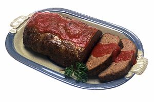

Baked Teriyaki Chicken
Easy Meatloaf

Meatloaf is a dish of ground meat that has been combined with other ingredients and formed into the shape of
a loaf, then baked or smoked. The final shape is either hand-formed on a baking tray, or pan-formed by
cooking it in a loaf pan.
The cooked meatloaf can be sliced like a loaf of bread to make individual portions. It can easily become dry;
therefore, various techniques exist to keep the dish moist, like mixing in bread crumbs and egg, covering it with
sauce, wrapping it, or using moisture-enhancing ingredients in the mixture, such as filling it with fatty meats,
rich cheeses, or vegetables.The cooked meatloaf can be sliced like a loaf of bread to make individual portions.
Ingredients
- ½ cup milk or water or any vegan milk
- 1 cup soft bread crumbs (about 2 slices of bread, torn into pieces)
- 1 ½ pound ground beef
- 1 ¼ teaspoon salt
- ground black pepper to taste
- 1 egg, slightly beaten
- 3 tablespoons steak sauce, (e.g. Heinz 57) or 1 tablespoon of Worchestire Sauce
- 1 onion, chopped
- ½ cup diced green bell pepper
- ½ cup diced carrots
- ¼ cup diced celery
- 1 cup of tomato sauce (ready-made or homemade. Your choice!)
- 1 tablespoon of sugar (optional)
Steps
- Preheat oven to 350 ºF (175 ºC). Lightly grease an 8 1/2 x 4 1/2 inch loaf pan.
- Combine milk/water/vegan milk and soft bread crumbs in a small bowl and allow to soften, about 5 minutes.
- Cn a mixing bowl, combine the ground beef, salt, pepper, egg, 3 tablespoons steak sauce, chopped onion, green bell pepper, carrot and celery. Add bread crumb mixture, and mix with your hands until all ingredients are combined.
- Pat the the mixture into the prepared loaf pan. Brush the top with tomato sauce mixed with sugar.
- Bake in the preheated oven for 1 hour or until done. Allow to stand 5 minutes before slicing.
Enjoy!
Back to Main Page